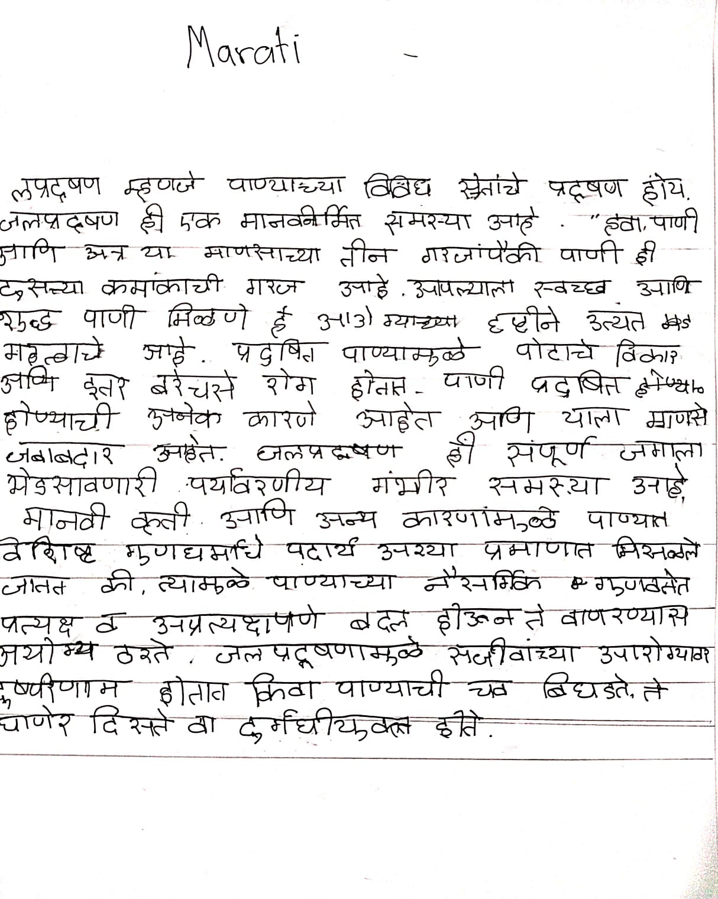

MARATI PAGE

Marati topic description:
Welcome to MARATI page
| MARATI PAGE | |
|---|---|
|  | |
| Marati topic description: |
लप्रदूषण म्हणजे पाण्याच्या विविध स्रोतांचे प्रदूषण होय. जलप्रदूषण ही एक मानवनिर्मित समस्या आहे. "हवा,पाणी आणि अन्न" या माणसाच्या तीन गरजांपैकी पाणी ही दुसऱ्या क्रमांकाची गरज आहे. आपल्याला स्वच्छ आणि शुद्ध पाणी मिळणे हे आरोग्याच्या दृष्टीने अत्यंत महत्त्वाचे आहे. प्रदुषित पाण्यामुळे पोटाचे विकार आणि इतर बरेचसे रोग होतात. पाणी प्रदूषित होण्याची अनेक कारणे आहेत आणि याला माणसे जबाबदार आहेत. जलप्रदूषण ही संपूर्ण जगाला भेडसावणारी पर्यावरणीय गंभीर समस्या आहे. मानवी कृती आणि अन्य कारणांमुळे पाण्यात विशिष्ट गुणधर्मांचे पदार्थ अश्या प्रमाणात मिसळले जातात की, त्यामुळे पाण्याच्या नैसर्गिक गुणवत्तेत प्रत्यक्ष व अप्रत्यक्षपणे बदल होऊन ते वापरण्यास अयोग्य ठरते. जलप्रदूषणामुळे सजीवांच्या आरोग्यावर दुष्परिणाम होतात किंवा पाण्याची चव बिघडते, ते घाणेरडे दिसते वा दुर्गंधीयुक्त होते. |